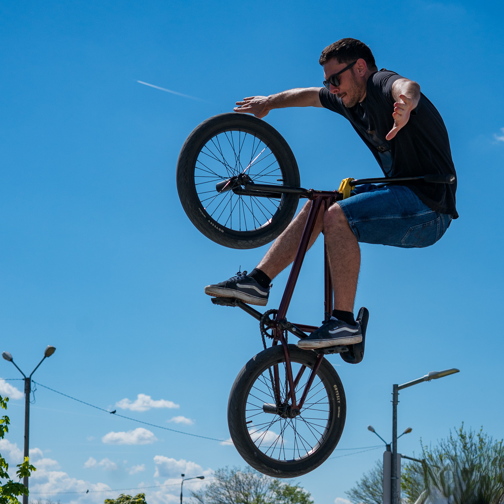
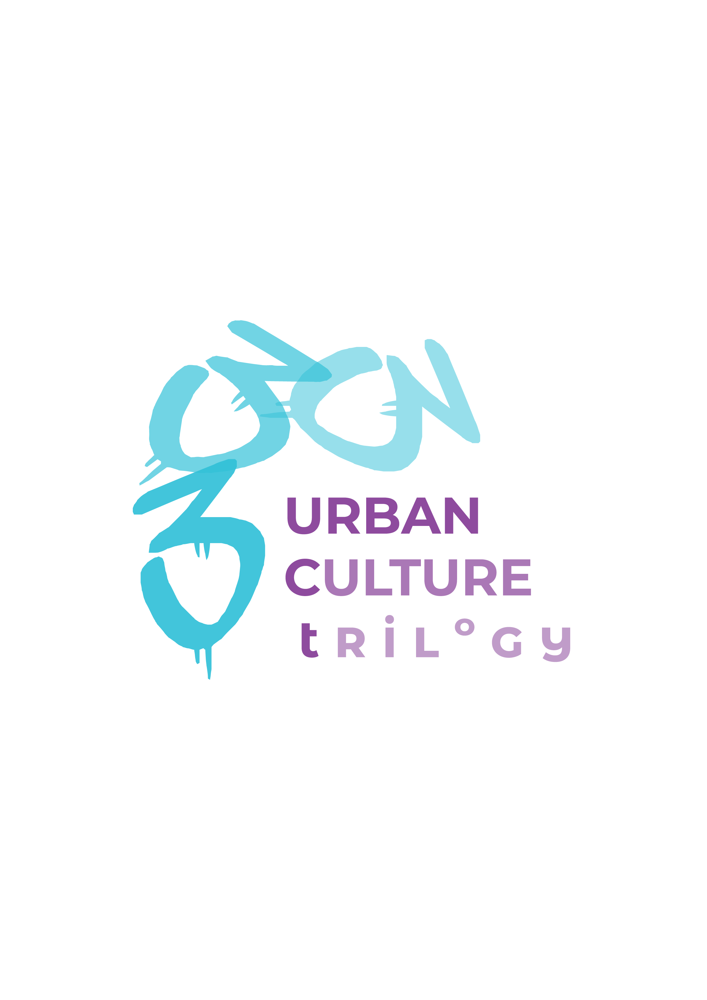

No items found.

Urban Culture: trilogy
Proiectul Urban Culture: trilogy. A youth to youth intercultural learning experience a avut ca punct de pornire observarea faptului că subcomunitățile din cultura urbană necesită un grad de vizibilitate crescut. Astfel, pornind de la trei forme parte din aceasta, proiectul s-a axat pe popularizarea BMX-ului, deci a unui sport mai puțin cunoscut de către public, pe educarea și destigmatizarea raportat la persoanele cu tatuaje și pe diversificarea modalităților de socializare și relaxare prin intermediul evenimentului dedicat muzicii rap.
Totul a fost despre peer-to-peer learning, deoarece moderatorii celor 3 evenimente sunt tineri parte din comunitățile pe care le reprezintă, care au fost dornici să împărtășească din pasiunile ce au devenit un stil de viață. Moderatorii primului eveniment au fost 2 bikeri și 2 grafferi cu experiență, în cazul celui de-al doilea a acceptat provocarea un tattoo artist, fondator al salonului A Touch of Ink, iar pentru ultimul eveniment un DJ a dat un vibe aparte zilei, după finalizarea celorlalte activități stabilite.
În cadrul proiectului și-au adus contribuția 12 voluntari tineri și acesta s-a concretizat în evenimente tematice, după cum urmează:
I. BMX, între lifestyle și fenomen cultural
1. Start event
Tinerii au fost întâmpinați și s-a explicat ideea din spatele proiectului. De asemenea, au fost prezentați moderatorii (2 bikeri și 2 grafferi).
2. Workshop with a twist și start graffiti
Cei 2 bikeri au expus propriul parcurs în ceea ce privește sportul BMX (competiții, pasiune), trick-uri pe care le-au și exemplificat în timp real, elemente specifice acestei comunități (muzică, stil de îmbrăcăminte, lifestyle), experiențe în care au simțit stigma din partea societății și au răspuns tuturor întrebărilor adresate de tineri, totul fiind interactiv.
În tot acest timp, concomitent, grafferii au început să picteze cele 2 panouri aduse la locație (un panou a rămas la SkatePark Sibiu, ca simbol al amprentei tinerilor, evenimentul desfășurându-se de Ziua Națională a Tineretului).
3. Pizza party
A existat și un moment în care tinerii au avut o pauză pentru a lua prânzul și au și socializat. 4. BIKE game și show off final Moderatorii evenimentului și alți tineri practicanți ce s-au alăturat pe parcurs au pus în scenă jocul BIKE - unul dintre bikeri făcea un trick, iar toți ceilalți încercau să îl imite cât mai precis. Dacă oglindirea nu era a la carte, persoana primea „calificativul” B, iar la acumularea a 4 greșeli îi era atribuit acronimul „BIKE” și era eliminat din joc. Activitatea poate fi privită ca un analog al jocului fazan, dar cu un foarte mare twist și adaptat pe cultura BMX. Această componentă a avut unele dintre cele mai spectaculoase trick-uri puse în scenă. II. Tatuajul, stigmă și artă 1. Prezentare tatuaje din perspectivă psihologică A existat o prezentare succintă, care a avut la bază 5 mari dimensiuni: a. Unde începe stigma și de ce?, b. Care pot fi motivele psihologice pentru care o persoană își face un tatuaj?, c. Psihologia transculturală, d. Libertatea de expresie, e. Destigmatizarea. 2. Prezentarea realizată de tattoo artist S-au prezentat tehnici cunoscute, tips&tricks pentru primul tatuaj și pentru îngrijire, povestea personală, relația cu clienții etc. 3. Discuție deschisă/peer sharing A fost lansată întrebarea - „Ai tatuaje și ai trecut printr-o situație în care ai simțit că ai fost stigmatizat?” /„Dacă nu ai tatuaje, ai auzit astfel de cazuri?”. 4. Demonstrație pe piele artificială Artistul tatuator a realizat o demonstrație pe piele artificială și a explicat toți pașii necesari a fi făcuți (de la dezinfectare, purtarea mănușilor de unică folosință, reglarea voltajului aparatului etc.). Participanții au avut posibilitatea de a tatua pe fake skin sub îndrumarea specialistului. OPȚIONAL! 5. Demonstrație reală la salon Participanții au fost invitați la salonul autorizat al artistului tatuator, după finalizarea workshop-ului, pentru a fi martorii unei ședințe reale de tatuat, cât și a întregului proces - de la semnarea consimțământului informat și până la înfolierea tatuajului și oferirea instrucțiunilor de îngrijire a acestuia. III. Rap-ul este poezie 1. Greeting the youth La începutul evenimentului, tinerii s-au acomodat cu locația (Lejer Bar Sibiu) și au interacționat unii cu ceilalți. 2. Rap artists expo De asemenea, la locație a fost derulată o expoziție cu informații despre unii dintre cei mai mari artiști de muzică rap la nivel global, pionieri în domeniu și newbies, cum ar fi Jay-Z, Tupac, Nicki Minaj, Doja Cat. 3. Rap culture quiz Mai departe, tinerii au avut ocazia să se implice într-un quiz de cultură generală, care conținea întrebări cu referire la muzica rap, informațiile aflându-se pe posterele parte din expoziție (deci, a existat și un prep înainte, mai subliminal ^^). La final, persoana de pe primul loc a obținut și un premiu. 4. Rap whisper challenge Fast forward, vestitul whisper challenge a fost adaptat: adică, în timp ce unul dintre tineri asculta muzică rap în căști, persoana din față rostea un cuvânt cu referire la această cultură (de exemplu, hip-hop, New York, Jay-Z and so on) și scopul era ca termenul să fie ghicit (pe lângă componenta de fun). 5. DJ set Seara s-a finalizat prin good vibes și socializare, totul pe fondul unui DJ set ca la carte. Desigur, muzica rap a fost vedeta și de data aceasta. Astfel, în cadrul proiectului au fost puse în valoare comunitățile subreprezentate și s-a sporit nivelul de incluziune al tinerilor parte din acestea. De asemenea, componenta de educație non-formală nu a lipsit, informațiile expuse de-a lungul celor 3 evenimente fiind valoroase și contribuind la înțelegerea îndeaproape a unor stiluri de viață diferite și diverse. Cheers to everybody part of this project! To many more!
A existat și un moment în care tinerii au avut o pauză pentru a lua prânzul și au și socializat. 4. BIKE game și show off final Moderatorii evenimentului și alți tineri practicanți ce s-au alăturat pe parcurs au pus în scenă jocul BIKE - unul dintre bikeri făcea un trick, iar toți ceilalți încercau să îl imite cât mai precis. Dacă oglindirea nu era a la carte, persoana primea „calificativul” B, iar la acumularea a 4 greșeli îi era atribuit acronimul „BIKE” și era eliminat din joc. Activitatea poate fi privită ca un analog al jocului fazan, dar cu un foarte mare twist și adaptat pe cultura BMX. Această componentă a avut unele dintre cele mai spectaculoase trick-uri puse în scenă. II. Tatuajul, stigmă și artă 1. Prezentare tatuaje din perspectivă psihologică A existat o prezentare succintă, care a avut la bază 5 mari dimensiuni: a. Unde începe stigma și de ce?, b. Care pot fi motivele psihologice pentru care o persoană își face un tatuaj?, c. Psihologia transculturală, d. Libertatea de expresie, e. Destigmatizarea. 2. Prezentarea realizată de tattoo artist S-au prezentat tehnici cunoscute, tips&tricks pentru primul tatuaj și pentru îngrijire, povestea personală, relația cu clienții etc. 3. Discuție deschisă/peer sharing A fost lansată întrebarea - „Ai tatuaje și ai trecut printr-o situație în care ai simțit că ai fost stigmatizat?” /„Dacă nu ai tatuaje, ai auzit astfel de cazuri?”. 4. Demonstrație pe piele artificială Artistul tatuator a realizat o demonstrație pe piele artificială și a explicat toți pașii necesari a fi făcuți (de la dezinfectare, purtarea mănușilor de unică folosință, reglarea voltajului aparatului etc.). Participanții au avut posibilitatea de a tatua pe fake skin sub îndrumarea specialistului. OPȚIONAL! 5. Demonstrație reală la salon Participanții au fost invitați la salonul autorizat al artistului tatuator, după finalizarea workshop-ului, pentru a fi martorii unei ședințe reale de tatuat, cât și a întregului proces - de la semnarea consimțământului informat și până la înfolierea tatuajului și oferirea instrucțiunilor de îngrijire a acestuia. III. Rap-ul este poezie 1. Greeting the youth La începutul evenimentului, tinerii s-au acomodat cu locația (Lejer Bar Sibiu) și au interacționat unii cu ceilalți. 2. Rap artists expo De asemenea, la locație a fost derulată o expoziție cu informații despre unii dintre cei mai mari artiști de muzică rap la nivel global, pionieri în domeniu și newbies, cum ar fi Jay-Z, Tupac, Nicki Minaj, Doja Cat. 3. Rap culture quiz Mai departe, tinerii au avut ocazia să se implice într-un quiz de cultură generală, care conținea întrebări cu referire la muzica rap, informațiile aflându-se pe posterele parte din expoziție (deci, a existat și un prep înainte, mai subliminal ^^). La final, persoana de pe primul loc a obținut și un premiu. 4. Rap whisper challenge Fast forward, vestitul whisper challenge a fost adaptat: adică, în timp ce unul dintre tineri asculta muzică rap în căști, persoana din față rostea un cuvânt cu referire la această cultură (de exemplu, hip-hop, New York, Jay-Z and so on) și scopul era ca termenul să fie ghicit (pe lângă componenta de fun). 5. DJ set Seara s-a finalizat prin good vibes și socializare, totul pe fondul unui DJ set ca la carte. Desigur, muzica rap a fost vedeta și de data aceasta. Astfel, în cadrul proiectului au fost puse în valoare comunitățile subreprezentate și s-a sporit nivelul de incluziune al tinerilor parte din acestea. De asemenea, componenta de educație non-formală nu a lipsit, informațiile expuse de-a lungul celor 3 evenimente fiind valoroase și contribuind la înțelegerea îndeaproape a unor stiluri de viață diferite și diverse. Cheers to everybody part of this project! To many more!
